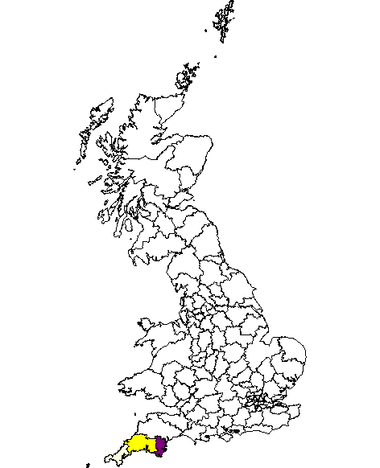
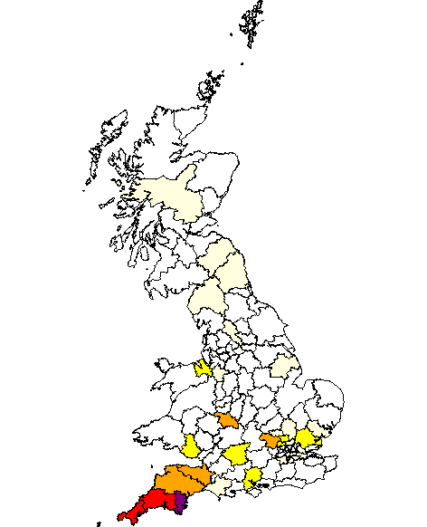

The distribution of the Hingston surname appears to be based around the South Hams area of Devon. The majority of the 2300 entries in the IGI are from that area. There are also a number of place names in that area which appear to be derived from Hingston.
The English Place Name Society volumes for Devon give the best indication of the source of the name. For the farm name HINGSTON in Bigbury, they quote HYNDESTAN (1238), HYNDESTANE (1244), HYNDESTON, HENDESTON (1427) and HENGESTON (1489). The etymology is suggested of "Hinds' stone", perhaps some ancient boundary marker. About a mile away from this farm is another, HINGSTON BOROUGH, in Aveton Gifford. No etymology is given for this name, but it may be presumed to be similar to the Bigbury Hingston. Also in Aveton Gifford is IDSTON, which is derived from HYDDESTON in 1238, but which they quote as being derived from "Geddi's farm", where Geddi is a personal name.
There is also a HINGSTON DOWN, near Moretonhampstead, where the derivation is given as HENGESDON (1333), meaning "Stallions Hill" which they compare with HINGSTON DOWN (Cornwall) which comes from HENGESTES DUNE (835 - Anglo Saxon Chronicle).
The village of HINXTON in Cambridgeshire is given the etymology of "Hengest's Farm", with many variations in spelling over the centuries, including HESTITONA, HENGSTETON, HINX(S)TON(E), HING(E)STON(E), HENKESTON.
A link between the place name and the personal name is provided by the "de HYNDESTON" family in the Aveton Gifford/Bigbury area. Stephen de Hyndeston was witness to a Lease for the Manor of Ashford (in Aveton Gifford Parish), in 1283. He was quoted as living at IDSTON (see above) by Shaw in his "History of the Parish of Aveton Giffard" (published in the 1960s), but it is not clear whether Shaw was simply inferring that Stephen lived at Idston, or whether he had evidence for it. By 1622, there were people with the modern spelling (HINGSTON) living in Aveton Gifford (and elsewhere in the South Hams). In the Devon and Cornwall Record Society Collection in Exeter there is a tree (drawn up in 1927) based clearly on the will of one Robert Hingston who died in 1488, which quotes both the names Hingston and Hyddeston within the same family. It is not clear whether the will still exists, as many Devon wills were destroyed in the wartime bombing of Exeter.
On the basis that most of the Hingston names seem to come from the South Hams area of Devon (based on the IGI and 1851 census distribution), and that there are well-attested place names in the area, it seems logical to conclude that we might expect most of the modern-day Hingston families to be descended from Hingston or Hyddeston families in this area of Devon.
| The two maps below are taken from the GB Names Public Profiler site, which is a research project at University College, London that gives the distribution of names in 1881 and 1998. The focus of the names is clearly within South Devon. | |
| 1881 | 1998 |
 |
 |
| The map below shows the distribution of Hingston marriages in the South Hams area of Devon, as listed in the DFHS marriage indices. It includes some, but not all, of the Quaker marriages in Tree HD. It does not mean that the Hingston who was married actually lived in the place shown but it does indicate where one might look. The marriages in and around Plymouth are often of couples where one or both of the partners lived outside the city. |
|
The logic seems to be that the surname Hingston comes from Hingston Down in Cornwall, and that this in turn is derived from the name of Hengist. There was a famous battle of Hingston Down, and the assumption is made that Hengist had something to do with that.
In fact, Hengist was a mercenary brought in, with his brother Horsa, to defend the area we now call Kent, which had been part of the Roman province of Britain, in the year 449. The brothers decided they were on to a good thing, and decided to take Kent for themselves. There seems to be no evidence that they came into the West of England.
The name of Hingston Down seems to be associated with Hengist only on linguistic grounds.
The Battle of Hingston Down was fought by the West Saxon King Egbert in 838, much too late for Hengist to have had anything to do with it. The battle was fought against Danish and Cornish Briton invaders and resulted in an overwhelming victory for Egbert. According to the Oxford History of England, it is this battle which effectively ended any thoughts of Cornish independance and finally led to a united kingdom of England on borders that we more or less know today. At the time of the battle the place was known as Hengestesdun.
The centre of the Hingston name (as a surname), seems to lie squarely in the South Hams, somewhere in the area bounded by the rivers Avon and Yealm and the southern fringes of Dartmoor. Although there were some Hingstons in East Cornwall, near Hingston Down, in the 18th century, these families all seem to be linked to South Devon Hingstons.
Thus, the connection with Hengist seems to be based on at least two false assumptions - that Hingston is derived from Hingston Down, and that Hingston Down has something to do with Hengist.
Return to the Hingston One-Name Study
Page updated by Chris Burgoyne on 29th May 2011.